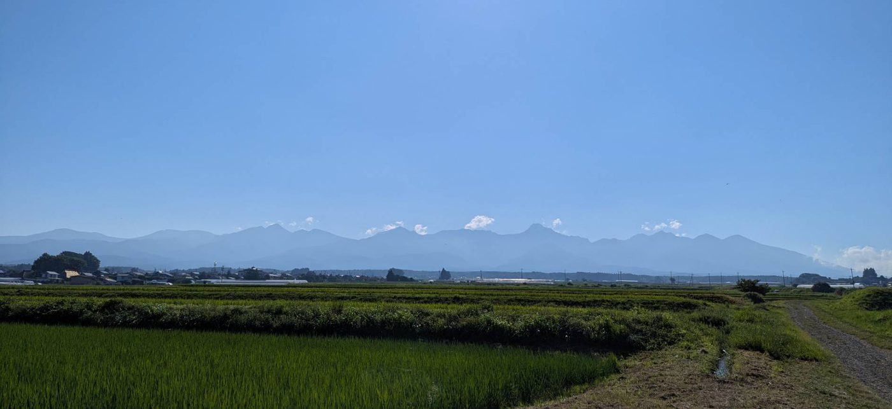

WOODMAN plus
Original Shinshu
Hamburg Steak & Steak
Taste the blessings of Shinshu.
WOODMAN plus
Woodman plus
Woodman plus is a small restaurant located at the gateway to the Tateshina Highlands, at the foot of the Yatsugatake Mountains in Nagano.
Our story began more than 60 years ago with our grandmother's yakiniku diner, followed by our father's restaurant, and now continues as Woodman plus.
For three generations, we have welcomed guests here in Shinshu.
What matters most to us is serving dishes made with local Shinshu ingredients and creating flavors that can only be experienced here.
RECOMMENDED DISHES
Recommended Dishes
Suwa no Teppen Hamburg Steak
Our signature hamburger steak, made with 100% beef.
It is simply grilled to bring out the natural flavor and richness of the meat.
Enjoy it with Shinshu-inspired accompaniments such as horseradish, homemade miso made with Botan Kosho, a traditional Shinshu pepper, snow salt, and lemon.
Shinshu Hamburg Steak
A tender and juicy hamburger steak made with a blend of 70% beef and 30% pork.
This is one of Woodman plus's classic dishes and has been loved by our guests for many years.
Shinshu Wagyu & Tateshina Beef Steak
Enjoy beef raised in the beautiful natural surroundings of Shinshu.
Our steaks are simply seasoned and prepared to highlight the natural flavor and quality of the meat.

THE BLESSINGS OF SHINSHU
The Blessings of Shinshu
and Yatsugatake
Our dishes feature vegetables delivered by local partner farmers in the Yatsugatake area, as well as vegetables grown in our own garden.
The selection changes with the seasons, allowing you to enjoy the unique flavors of Shinshu throughout the year.
We also serve Tateshina Natural Water, sourced from underground spring water flowing from Mt. Tateshina at an elevation of approximately 1,500 meters.
With a hardness level of just 23 mg/L, it is exceptionally soft and smooth.
FOR TRAVELERS
For Travelers Visiting Nagano
If you are traveling through Tateshina, Lake Shirakaba, Kurumayama, Lake Suwa, or the Yatsugatake area, we would be delighted to welcome you.
Although we are located in a popular sightseeing region, we hope to offer a peaceful place where you can step away from everyday life and enjoy a relaxed meal.
Through each dish, we hope you can experience a little of the nature and flavors of Shinshu.

VISITING WOODMAN PLUS
Visiting Woodman plus
Woodman plus is a small restaurant with limited seating.
Reservations are recommended, especially on weekends, public holidays, busy days, and during major holiday periods.
For our latest opening hours, closing days, and other updates, please check our official website or Google Maps.
RESERVATION →WELCOME TO SHINSHU
Welcome to Shinshu
We hope that a meal with us becomes one of the special memories of your journey through Shinshu.
We look forward to welcoming you to Woodman plus.